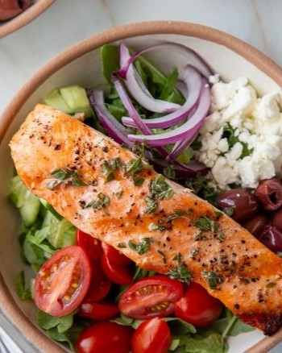

Grilled Lemon Herb Salmon
Ingredients:
- 4 salmon fillets (about 6 ounces each), skin-on or skinless
- 2 tablespoons olive oil
- Zest of 1 lemon
- Juice of 1 lemon
- 2 cloves garlic, minced
- 2 tablespoons fresh parsley, chopped
- 1 tablespoon fresh dill, chopped
- Salt and black pepper to taste
- Lemon wedges (for garnish)
Instructions:
- Preheat your grill to medium-high heat. Ensure the grill grates are clean and lightly oil them to prevent sticking.
- In a small bowl, combine the olive oil, lemon zest, lemon juice, minced garlic, chopped parsley, chopped dill, salt, and black pepper. Mix everything together well to create the marinade.
- Pat the salmon fillets dry using paper towels and place them in a dish or on a plate. Brush both sides of the salmon fillets with the prepared marinade, making sure they are evenly coated. Allow the salmon to marinate for about 15-20 minutes at room temperature, allowing the flavors to infuse into the fish.
- Once the grill is ready, place the salmon fillets onto the grill grates, skin-side down if using skin-on fillets. Close the grill lid and cook for approximately 4-5 minutes without moving the fish.
- Carefully flip the salmon fillets using a spatula. If using skin-on fillets, you can gently slide the spatula between the flesh and the skin to remove the skin after flipping. Grill for an additional 3-4 minutes or until the salmon is cooked through and easily flakes with a fork. Cooking time may vary depending on the thickness of the fillets.
- Once cooked, remove the salmon from the grill and transfer it to a serving platter. Garnish with additional fresh herbs and lemon wedges for added flavor.
- Serve the Grilled Lemon Herb Salmon hot, accompanied by your choice of side dishes such as roasted vegetables, rice, or a salad.